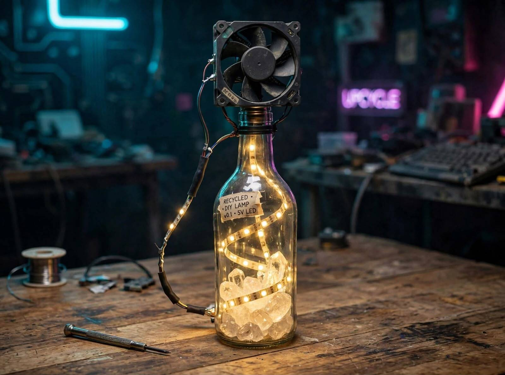
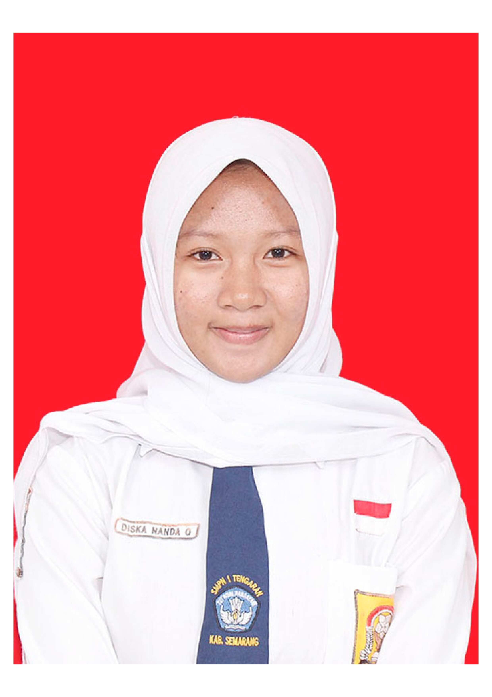
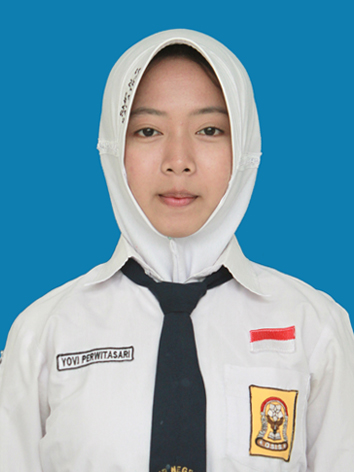

Project Pengelolaan Limbah Teknologi
Dari Limbah
Menjadi Mewah
Mengolah sampah menjadi produk bernilai guna tinggi melalui prinsip 3R (Reduce, Reuse, Recycle) dan pendekatan lintas disiplin ilmu metode Waterfall.
Latar Belakang : Limbah Kipas Laptop
Di era modern saat ini, penumpukan limbah anorganik dan sampah elektronik (e-waste) menjadi salah satu tantangan lingkungan terbesar yang belum teratasi secara optimal. Botol kaca bekas minuman sering kali berakhir di tempat pembuangan sampah atau terbuang begitu saja. Padahal, material kaca membutuhkan waktu hingga jutaan tahun untuk dapat terurai secara alami di alam. Di sisi lain, pesatnya perkembangan teknologi menyebabkan banyaknya komponen elektronik bekas—seperti kipas pendingin laptop/PC dan sisa potongan strip LED—dibuang padahal masih memiliki fungsi teknis yang sangat baik pada arus listrik tegangan rendah. Sampah kaca dan komponen elektronik bekas kerap dipandang sebelah mata dan berakhir menumpuk di lingkungan. Padahal melalui prinsip upcycling, limbah ini bisa diolah menjadi barang berdaya guna dan bernilai ekonomi tinggi. Melalui proyek kolaborasi "Dari Limbah Jadi Mewah", kami menghadirkan solusi inovatif yang menggabungkan lampu meja estetik berkonsep cyberpunk/industrial dan kipas pendingin berdaya USB 5V. Memanfaatkan pembiasan cahaya botol kaca bening dan hembusan angin kipas bekas, proyek ini membuktikan bahwa barang buangan dapat diselamatkan sekaligus disulap menjadi hiasan meja kerja yang mewah, modern, dan fungsional.
Konsep
Dasar Rekayasa serta Lingkungan
01
Konsep Upcycling & Ekonomi Sirkular
Memahami perbedaan antara recycling biasa dengan upcycling, yaitu proses mengolah barang bekas (e-waste dan botol kaca) menjadi produk baru dengan nilai estetika, fungsi, dan harga jual yang jauh lebih tinggi dari nilai aslinya.
02
Optika & Pembiasan Cahaya Kaca
Mempelajari bagaimana sifat fisik kaca bening membiaskan dan memantulkan pendaran cahaya dari strip LED 5V, sehingga tercipta efek visual berpendar (glow effect) berkonsep industrial/cyberpunk yang mewah.
03
Rangkaian Listrik Arus Searah (DC 5V)
Mengaplikasikan prinsip dasar kelistrikan dengan merangkai LED strip dan kipas DC secara paralel, sehingga keduanya dapat menyala secara optimal hanya menggunakan pasokan daya dari kabel USB 5V.
04
Mekanik Udara & Aerodinamika Sederhana
Memahami cara kerja kipas pendingin DC dalam mengarahkan aliran udara dari leher botol ke area kerja untuk memberikan efek hembusan angin yang stabil dan tidak bising.
Hasil Karya
Katalog Produk Daur Ulang


Edukasi Terpadu
Integrasi Mata Pelajaran
Matematika
Penerapan Sistem Persamaan Linear Dua Variabel (SPLDV) untuk estimasi harga paket produk.

SPLDV Milik Diska
Permisalan: x = Harga 1 Lampu Belajar y = Harga 1 Tempat Surat
Model Matematika:
-
2x + 3y = 155.000 Persamaan (1)
x + 2y = 90.000 Persamaan (2)
Penyelesaian :
-
Eliminasi x:
2x + 4y = 180.000
2x + 3y = 155.000
--------------- (-)
y = 25.000
Substitusi y ke (2):
x + 2(25.000) = 90.000
x + 50.000 = 90.000
x = 40.000
Harga Satuan: x = Rp 40.000 | y = Rp 25.000

SPLDV Milik Fikri
Permisalan: x = harga 1 lampu kipas botol y = harga 1 lampu mouse
-
3x+2y=176.000 Persamaan (1)
2x+y=108.000 Persamaan (2)
-
Eliminasi x:
4x+2y=216.000
3x+2y=176.000
--------------- (-)
x = 40.000
Substitusi x ke (2):
2x+y=108.0002
2(40.000)+y=108.000
80.000+y= 108.000
y=108.000-80.000=28.000
Harga Satuan: x = Rp 40.000 | y = Rp Rp28.000.

Bahasa Indonesia — Laporan Observasi
Penyusunan Teks Laporan Hasil Observasi (LHO) terstruktur.
Teks LHO oleh Diska Nanda OktaviaBuka Catatan
Lampu Hias Daur Ulang adalah produk yang dibuat dari barang bekas. Objek yang diamati adalah Recycled DIY Lamp V0.1 5V LED. Lampu ini adalah lampu meja yang bisa menyala dan juga bisa jadi kipas. Lampu ini dibuat dari botol kaca bekas dan kipas komputer bekas. Ini adalah contoh dari prinsip 3R yaitu Reduce, Reuse, dan Recycle.
Lampu ini bentuknya unik. Bodinya terbuat dari botol kaca bening. Di dalam botol ada lampu LED strip 5V warna kuning hangat yang dililit melingkar. Cahayanya tidak silau dan nyaman di mata. Di atas botol ada kipas laptop bekas yang berfungsi sebagai kipas meja. Di bawah botol ada batu kristal bening untuk pemberat agar tidak mudah jatuh dan agar cahaya terlihat lebih bagus. Lampu ini memakai kabel USB 5 Volt, jadi bisa dicolok ke laptop, powerbank, atau casan HP. Jadi sangat hemat listrik dan aman.
Manfaat lampu ini banyak. Bisa dipakai untuk lampu tidur, lampu belajar, kipas meja, dan juga sebagai hiasan meja. Lampu ini ramah lingkungan karena mengurangi sampah kaca dan sampah elektronik. Selain itu hemat listrik karena hanya 5V. Harganya juga murah yaitu Rp 40.000, jadi bisa jadi ide usaha untuk pelajar PPLG.
Berdasarkan hasil observasi, dapat disimpulkan bahwa lampu hias daur ulang ini merupakan bukti bahwa kreativitas dapat mengubah sampah menjadi produk yang fungsional, unik, hemat energi, dan memiliki nilai jual.
Teks LHO oleh Fikri MahardikaBuka Catatan
Lampu meja dari botol bekas dan kipas laptop bekas adalah produk kerajinan inovatif yang memanfaatkan barang bekas menjadi benda yang berdaya guna. Produk yang diobservasi ini dibuat menggunakan botol kaca bekas, lampu LED, dan kipas laptop yang sudah tidak terpakai.
Lampu meja ini menggunakan botol kaca transparan sebagai badan utama lampu. Di dalam botol tersebut dipasang rangkaian lampu LED berwarna kuning yang menghasilkan cahaya lembut.
Pada bagian atas botol terpasang kipas laptop bekas yang berfungsi sebagai elemen estetika sekaligus dapat digunakan sebagai kipas pendingin kecil. Perpaduan antara botol kaca, cahaya lampu LED, dan komponen kipas laptop menghasilkan desain unik.
Lampu meja ini bermanfaat sebagai lampu tidur, lampu hias, maupun sumber pencahayaan tambahan di dalam ruangan. Selain memiliki fungsi praktis, produk ini menjadi media edukasi mengenai konsep pemanfaatan kembali barang bekas (upcycling).
Berdasarkan hasil observasi tersebut ,saya dapat menyimpulkan bahwa lampu meja dari botol bekas dan kipas laptop merupakan produk kreatif yang mempunyai nilai guna dan nilai keindahan.
Teks LHO oleh Yovi PerwitasariBuka Catatan
Pemanfaatan kembali barang bekas (upcycled DIY project) berupa gabungan antara lampu hias meja dan kipas angin mini. Produk inovatif ini dibuat dengan memanfaatkan limbah elektronik (e-waste) dan bahan bekas rumah tangga, utamanya kipas pendingin laptop serta botol kaca bening.
Secara visual, produk ini terdiri dari beberapa komponen utama yang terorganisasi secara vertikal. Pada bagian paling atas, terpasang sebuah kipas pendingin laptop bekas berukuran persegi berwarna hitam yang ditempatkan secara tegak lurus tepat di atas leher botol. Di dalam botol tersebut, terdapat gulungan strip lampu LED 5 Volt berwarna warm white yang melingkar indah.
Pada bagian dasar botol, dimasukkan potongan-potongan batu atau kristal transparan bening. Keberadaan batu-batu ini berfungsi ganda, yaitu membiaskan cahaya lampu LED agar pendarannya tampak lebih menyebar dan lembut, sekaligus memberikan bobot penyeimbang di bagian bawah agar posisi botol tetap stabil.
Berdasarkan hasil pengamatan, produk daur ulang ini memberikan berbagai dampak positif dan manfaat nyata. Dari sudut pandang lingkungan, pembuatan alat ini efektif mengurangi penumpukan limbah elektronik dan sampah botol kaca dengan mengubahnya menjadi barang bernilai guna.
Bahasa Inggris — Report Text
Observation report on electronic waste upcycling process.
Report Text by Diska Nanda OktaviaBuka Catatan
Electronic waste is one of the environmental problems caused by the rapid development of technology. Old laptop fans and motherboards are often discarded when they are damaged or no longer needed. However, these components contain materials that can still be reused. One creative way to manage this waste is by transforming an old laptop fan and electronic components into a decorative bottle lamp.
The transformation begins when a used laptop fan is separated from the old laptop and from other electronic parts. The fan, small pieces of motherboard, and LED strip are removed from the main structure and cleaned to remove dust and dirt. A used glass bottle is also cleaned to be used as the main body of the lamp.
The cleaned components are combined with a glass bottle to create a new object. Through the process of arranging and attaching, the 5V LED strip is inserted and spiraled inside the bottle to create a glowing effect. The old laptop fan is then attached to the top of the bottle, and small motherboard chips are glued around the bottle as decoration.
As a result, an old laptop fan is transformed into a decorative lamp that has both functional and aesthetic value. The product can be used as a table lamp while also serving as a creative decoration with an upcycle theme.
Report Text by Fikri MahardikaBuka Catatan
A recycled bottle desk lamp is an innovative lighting product made from reused materials, such as a glass bottle, an LED strip, and a unused laptop fan. This product combines technology, creativity, and environmental awareness.
The lamp uses a transparent glass bottle as its main body. Inside the bottle, a yellow LED strip is installed to produce a soft and colorful glow. A unused laptop fan is attached to the top of the bottle as a decorative element. It can also function as a small cooling fan.
This lamp functions as a decorative desk light. It provides additional lighting, enhances the appearance of a room, and demonstrates how waste materials can be transformed into useful and valuable products.
In conclusion, the recycled bottle desk lamp is a creative and environmentally friendly innovation.
Report Text by Yovi PerwitasariBuka Catatan
Electronic waste, such as old laptop cooling fans, is a growing environmental issue. Instead of throwing them away when a laptop is broken or obsolete, these components can be reused. One creative way to manage this waste is by transforming an old laptop fan into a unique multifunctional DIY project: a combination of a decorative lamp and a mini fan.
The transformation process begins by gathering the main components: an unused laptop cooling fan and a clear glass bottle. The fan is cleaned to remove dust and dirt, and its wiring is prepared for connection to a power source. A 5V LED strip lights assembly is also prepared.
Inside the clear glass bottle, the LED strip lights are wrapped around transparent decorative stones to create an aesthetic glowing effect. The laptop fan is then securely attached to the top opening of the bottle. All wiring from both the LED lights and the fan is routed and connected to a power supply cord.
As a result, a discarded laptop fan component is transformed into a DIY product that has both functional and aesthetic value. The product serves a dual purpose: acting as a warm ambient light and providing a cooling breeze.
Kolaborator Proyek
Anggota Tim

Diska Nanda Oktavia (16)
Penyusun Makalah & Dokumentasi Proyek serta membantu membuat website.


Fikri Mahardika (17)
Menyusun desain website dan menerapkanya.

Yovi Perwitasari (35)
Perakit karya lampu dan kipas(laptop) dan desain produk daur ulang serta membantu membuat websie.
Mari Berdiskusi
Punya Pertanyaan Mengenai Proyek Ini?
Kami terbuka untuk saran, kolaborasi edukasi, atau pertanyaan seputar pengolahan limbah motherboard dan produk 3R.
📌
Lokasi Proyek
Sekolah / Proyek Kolaboratif Eco Innovation
📖
Metode Pembelajaran
Metode Waterfall & Pendekatan 3R